UE24CS352A Machine Learning Hackathon, PES University RR Campus. Technical report
Team: Anna, Annanya, Bhoomika, Bhuvan
PathSnap matches noisy GPS observations to a road network. For every GPS point we generate up to 16 candidate road segments (directed arcs), score each candidate with a supervised classifier, and decode the most likely arc sequence with a hidden Markov model and the Viterbi algorithm. Gaps between consecutive decoded arcs are filled with shortest paths, giving a connected route. A FastAPI service on Laptop 1 runs this pipeline for a trip id sent by a web UI on Laptop 2, and scores the result against reference data that stays on the server.
Final system on the 10 student-test trips: the tuned LightGBM classifier on its own selects the correct arc for 88.4% of GPS points; after HMM decoding this rises to 92.6%. Route continuity goes from 95.4% to 98.3% and the length-weighted route F1 from 85.5% to 98.9%. The simplest baseline, taking the geometrically nearest arc, is correct for 51.8% of points. On the 10 evaluator-test trips, scored once through the API after all choices were frozen (Section 8), the full system reaches a similar level.
| Member | Responsibility | Main files |
|---|---|---|
| Anna | HMM and Viterbi decoding, route reconstruction, continuity and route metrics, decoder tuning, end-to-end pipeline, FastAPI backend and two-laptop deployment | hmm.py, metrics.py, pipeline.py, scripts/05_hmm.py, api/ |
| Annanya | Feature engineering, training and comparison of the nine models, grouped cross-validation, model selection, Bayesian hyperparameter optimisation, comparison plots | features.py, models.py, datasets.py, scripts/03, 04, 06 |
| Bhoomika | Data loading and cleaning, local projection, reference-route alignment (labels), exploratory data analysis, Folium maps | data_io.py, geo.py, labeling.py, maps.py, scripts/01_eda.py, scripts/07_detail_maps.py |
| Bhuvan | Road-network cropping, KD-tree candidate generation, candidate miss-rate analysis, dataset build, evaluator UI | network.py, scripts/02_build_dataset.py, ui/ |
All results in this report are produced by the scripts in the repository (scripts/01 to 07), in the order
given in the README, with random seed 42. Tables are generated from results/*.csv.
Partitions used. All EDA statistics below use the training partition (80 trips) and the student-testing partition (10 trips); each table states which. The evaluator-testing partition was not available to us and was not used anywhere.
Each trip folder has four header-less, whitespace-separated files. .track holds longitude, latitude and a time
stamp in seconds. .nodes holds node coordinates, and the row number is the node id. .arcs holds
(from node, to node) pairs, and the row number is the arc id. .route lists reference arc ids in travel order.
A GPS row does not correspond to any row in the other files: the route has one entry per arc driven
(median 280 arcs per training trip) while the track has one entry per second
(median 1529 points). Linking them is part of the problem (Section 2.4).
| Statistic | Training | Student test |
|---|---|---|
| Trips | 80 | 10 |
| GPS points | 208,417 | 19,160 |
| Points per trip, minimum | 361 | 262 |
| Points per trip, median | 1,529 | 1,420 |
| Points per trip, maximum | 19,313 | 3,958 |
| Missing values in .track | 0 | 0 |
| Invalid coordinates removed | 0 | 0 |
| Duplicate time stamps removed | 0 | 0 |
| Out-of-order time stamps | 0 | 0 |
| Trips with a gap over 30 s | 28 | 2 |
| Road nodes per trip, median | 9,608 | 6,596.5 |
| Road arcs per trip, median | 19,526.5 | 13,145 |
| Isolated nodes | 0 | 0 |
| Weakly connected components, median | 20 | 11 |
| Reference arcs per trip, median | 280 | 250 |
| Reference route continuity, minimum | 0.981 | 0.997 |
Table 2.1: Dataset inventory (results/eda_summary.csv; per-trip details in results/eda_inventory.csv).
No file is missing for any trip and the track files contain no missing values, no coordinates outside the valid range,
no (0, 0) fixes, no duplicate time stamps and no out-of-order time stamps. The cleaning step in
pathsnap/data_io.py still checks all of these, so it is safe on unseen trips. The missing information in this dataset is of a
different kind:
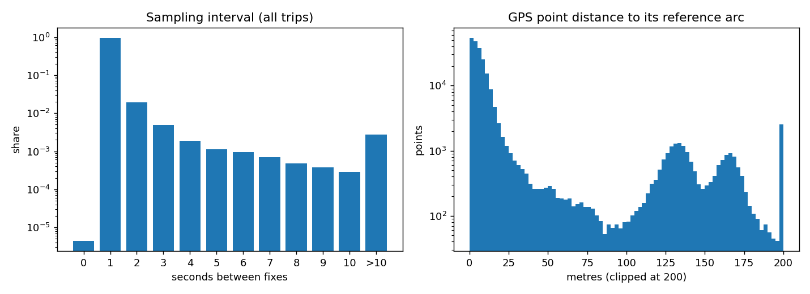
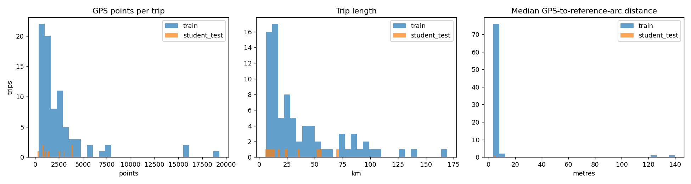
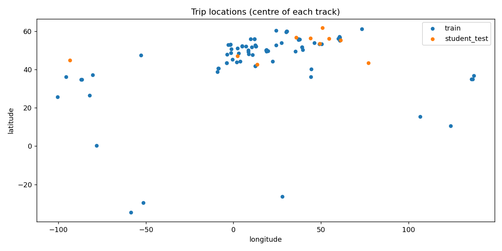
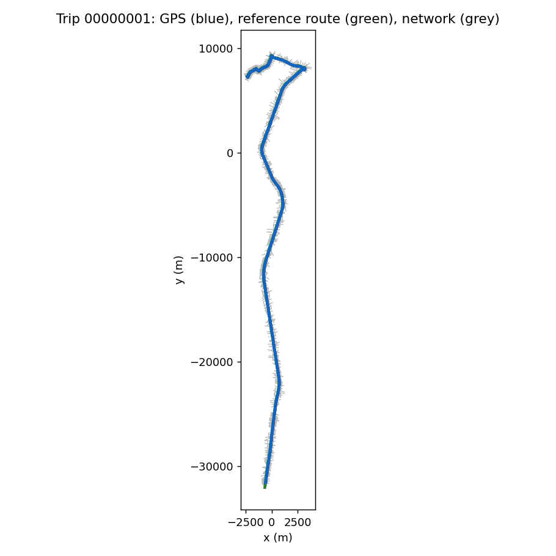
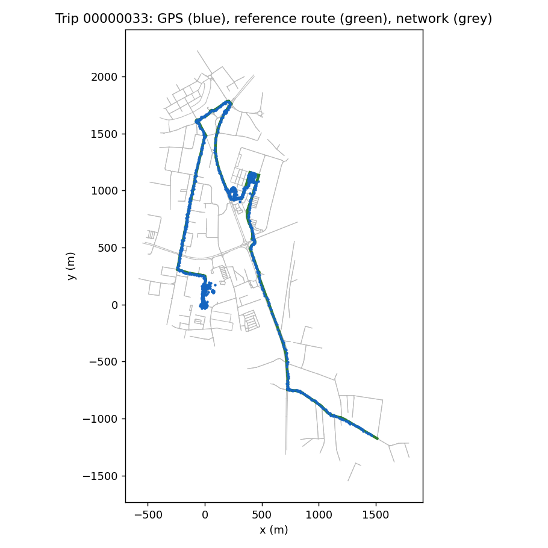
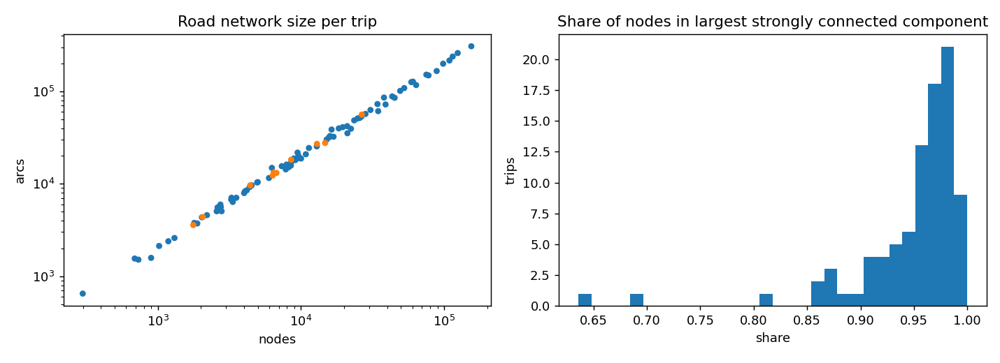
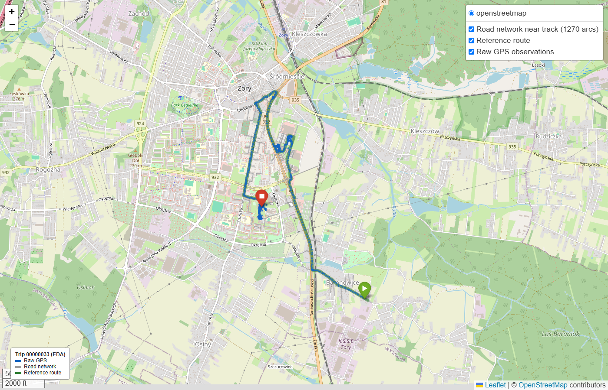
data_io.py): drop non-finite or out-of-range coordinates and (0, 0) fixes, sort by time and
remove duplicate time stamps. Arcs with invalid node ids or identical endpoints are dropped.geo.py): longitude and latitude are angles, and one degree of longitude shrinks with latitude
(about 62 km at 56° N against 111 km per degree of latitude), so Euclidean distance in degrees is wrong. We project every trip to a local
equirectangular plane centred on the median of its GPS points. Within the largest trip extent
(75 km) the scale error stays below 1%, far smaller than GPS noise, and
point-to-segment distances and bearings become plain Euclidean geometry in metres. UTM would also work, but the trips fall into many
different UTM zones, and a per-trip plane avoids zone handling.network.py): only arcs with an endpoint inside the track's bounding box plus 600 m are kept.
This bounds memory and Dijkstra cost and leaves room for detours.labeling.py): the route file lists arcs, not points, so we align points to
route positions with a monotone dynamic programme. Point i receives route index ji with
ji never decreasing. The cost is the point-to-arc distance plus 1 for every change of arc plus 0.5 per metre of
skipped route length beyond the distance the GPS actually moved (+30 m slack). A step may advance at most 40 route arcs. Monotonicity
keeps loops and streets driven twice in order, which a plain nearest-route-arc assignment cannot do. The alignment is used only to
create training labels and for server-side scoring; the prediction path never calls it.Points are sampled every 10 m along every arc and stored in a KD-tree. For each GPS point we query the 128 nearest samples, take their distinct arcs, compute the exact point-to-segment distance and keep the 16 closest arcs (both directions of a street count separately, so this is roughly 8 streets). The reference arc is missing from the candidate set for 0.08% of student-test points and 0.65% of training points outside trips 33 and 54 (with those two trips the training figure is 6.4%, which reflects their missing reference coverage, not a search failure). Points have on average 14.3 candidates (a few points in sparse areas have fewer), and 6.5% of candidate rows are positives, so the classes are imbalanced roughly 1 to 14.
Each (GPS point, candidate arc) pair is one row with 23 features (features.py). They use only GPS data and road
geometry. Neighbouring GPS points (up to five steps before and after) are used because map matching is done on the complete
recorded track, which is also what the API receives.
| Group | Features | Why we chose them |
|---|---|---|
| Distance | dist, dist_rank, dist_minus_min, dist_ratio | The correct arc is usually close, but what matters is how close it is compared with the alternatives for the same point. Relative features carry most of the model's gain. |
| Temporal smoothing | win2_mean_dist, win2_max_dist, win5_mean_dist | Distance of neighbouring points to the same arc. One noisy fix can sit closer to a side street; five consecutive fixes rarely do. |
| Direction | head_cos, head_cos_wide, head_abs_deg, heading_valid | Separate the two directions of the same street. Heading comes from points i-2 to i+2 (and i-6 to i+6 for the wide version). It is zeroed when the vehicle moved less than 3 m in that window, because the heading is then just noise. |
| Motion and gaps | speed, dt, gap | Context for how much to trust the heading and the distances. |
| Arc geometry | proj_t, arc_len, to_out_deg, from_in_deg | Where on the arc the projection falls (ends are ambiguous at junctions), arc length, and junction complexity. |
| Local density | n_cand_25m | Number of arcs within 25 m: dense junctions are harder. |
| Connectivity | prev_near_conn, next_near_conn, is_cand_prev, is_cand_next | Whether the candidate continues from the nearest arc of the previous point or into that of the next point. This is a light, point-wise version of the route constraint that the HMM applies fully. |
On the training rows, positives have a mean distance of 12.7 m against 70.1 m for negatives, a mean heading cosine of 0.76 against -0.03, and continue from the previous point's nearest arc in 80% of cases against 15%. In the final (tuned) LightGBM model the largest shares of total split gain go to dist_minus_min (37%), head_cos_wide (15%), dist_ratio (12%) and dist_rank (10%); Figure 3.6 shows the split-count importance of the untuned model. Features that are almost constant (gap, dt, heading_valid, is_cand_prev) receive no gain. We kept them for the linear and instance-based models, which use features differently.
Task framing. Each candidate row is classified as "reference arc" or "other arc". For every GPS point the candidate with the highest predicted probability is the classifier-only prediction.
Protocol. Five-fold GroupKFold on the training trips with trip id as the group, so no trip is in both a fit fold and
a validation fold. Scalers are fitted inside each fold (pipelines). Each model is then refitted on the whole training sample and
evaluated on every GPS point of the 10 student-test trips. KNN and MLP are trained on random subsets of whole GPS points (150k and 300k rows)
to keep training time reasonable; all other models use all 876,362 rows.
Metrics. Observation-level Top-1 accuracy is the share of GPS points whose highest-scoring candidate is the reference arc (points whose reference arc is not among the candidates count as errors). Macro F1, precision and recall are computed on the binary candidate labels with a 0.5 threshold and averaged over the two classes. Log loss is the binary cross-entropy on candidate rows. Route continuity is the share of consecutive GPS points whose predicted arcs are the same or directly connected (the first arc's end node is the second arc's start node). Inference time is measured on all 266,529 student-test candidate rows.
Primary selection metric. We select on cross-validated Top-1 accuracy. The decoder consumes the ranking and the probabilities of candidates within each GPS point, not the 0.5-threshold decision, so Top-1 is the metric closest to the route-matching goal. Macro F1 and log loss are reported alongside and agree with the ranking.
| Model | Family | Key configuration | CV macro F1 | CV Top-1 | Route continuity (test, classifier only) | Student-test macro F1 | Student-test Top-1 | Log loss (test) | Inference (ms / 1k rows) | Test Top-1 after HMM |
|---|---|---|---|---|---|---|---|---|---|---|
| LightGBM | Boosting | 400 trees, lr=0.05, 63 leaves, 0.8 row/col sampling | 0.9372 | 0.8846 | 0.9529 | 0.9333 | 0.8856 | 0.0441 | 3.62 | 0.9251 |
| RandomForest | Ensemble (bagging) | 150 trees, max_depth=18, min_samples_leaf=5 | 0.9344 | 0.8814 | 0.9482 | 0.9311 | 0.8778 | 0.0442 | 2.30 | 0.9212 |
| ExtraTrees | Ensemble (bagging) | 150 trees, max_depth=20, min_samples_leaf=5 | 0.9312 | 0.8811 | 0.9554 | 0.9264 | 0.8708 | 0.0497 | 3.65 | 0.9074 |
| HistGradientBoosting | Boosting | 300 iterations, lr=0.1, 31 leaves | 0.9345 | 0.8787 | 0.9434 | 0.9316 | 0.8801 | 0.0502 | 4.56 | 0.9252 |
| MLP | Neural network | (64,32) ReLU, Adam lr=1e-3, early stopping; 300k training rows | 0.9314 | 0.8782 | 0.9496 | 0.9266 | 0.8702 | 0.0512 | 0.51 | 0.9136 |
| DecisionTree | Tree | max_depth=12, min_samples_leaf=50 | 0.9314 | 0.8764 | 0.9437 | 0.9298 | 0.8785 | 0.0547 | 0.15 | 0.9214 |
| LogisticRegression | Linear | StandardScaler, L2, C=1.0 | 0.9155 | 0.8730 | 0.9440 | 0.9096 | 0.8582 | 0.0631 | 0.28 | 0.8887 |
| KNN | Instance-based | k=50, distance-weighted, scaled; 150k training rows | 0.9098 | 0.8578 | 0.9408 | 0.9086 | 0.8506 | 0.0762 | 114.20 | 0.8890 |
| GaussianNB | Probabilistic | var_smoothing=1e-9 | 0.7705 | 0.8411 | 0.9507 | 0.7554 | 0.8227 | 0.9411 | 0.87 | 0.8912 |
Table 3.1: All nine models (results/model_comparison.csv, results/hmm_by_model.csv). CV values are means over 5 grouped folds. Every metric applies to every model because all of them output probabilities; no cell is N/A.
LightGBM is best on cross-validated Top-1, cross-validated macro F1, student-test Top-1 and log loss. The tree ensembles and HistGradientBoosting are within one percentage point of it. The fold-to-fold standard deviation of Top-1 is about 0.027, so differences among the top five models are small compared with how much a single fold varies. LightGBM was chosen because it leads on both the CV and test metrics, has the best-calibrated probabilities (lowest log loss, which matters because the HMM uses the probabilities as emissions), and runs at about 4 ms per 1,000 candidate rows.
A1. Why suitable. Gradient boosting with leaf-wise growth and row/column subsampling. It handles mixed-scale features without scaling and models feature interactions, and its log-loss objective gives calibrated probabilities for the HMM.
A2. Strengths and limitations in our experiments. Best on CV and student-test Top-1 and on log loss, fast inference, small model file. Leaf-wise growth can overfit with large leaves; the train-validation gap (below) shows this and motivated the regularisation search in Section 4.
B5. Important hyperparameters and initial values. n_estimators = 400, learning_rate = 0.05, num_leaves = 63, subsample = 0.8, colsample_bytree = 0.8, min_child_samples = 20.
B6. Loss function or objective. Binary log loss minimised by gradient boosting with leaf-wise tree growth.
C7-C8. Student-test performance. Top-1 0.8856, macro F1 0.9333 (precision 0.9370, recall 0.9297), log loss 0.0441, classifier-only route continuity 0.9529. With HMM decoding its Top-1 becomes 0.9251. Cross-validation: Top-1 0.8846 ± 0.0267, macro F1 0.9372 ± 0.0133. Training time on the full sample 8.0 s, inference 3.62 ms per 1,000 rows.
C9. Overfitting or underfitting. Mild overfitting: Top-1 is 0.9442 on training folds against 0.8846 on validation folds (gap 0.060), and log loss 0.0222 against 0.0423. Validation performance is still the best or near the best, so the extra capacity is not hurting generalisation, but stronger leaf regularisation is worth trying.
A1. Why suitable. Averaging many decorrelated trees keeps the non-linear rules of a single tree while reducing its variance.
A2. Strengths and limitations in our experiments. Second-best log loss and stable folds. The model file is large (29 MB) and training was the slowest of all models (about 80 s per fold).
B5. Important hyperparameters and initial values. n_estimators = 150, max_depth = 18, min_samples_leaf = 5, max_features = sqrt (about 5 of the 23 features tried per split).
B6. Loss function or objective. Each tree minimises Gini impurity on a bootstrap sample; probabilities are averaged over trees.
C7-C8. Student-test performance. Top-1 0.8778, macro F1 0.9311 (precision 0.9438, recall 0.9191), log loss 0.0442, classifier-only route continuity 0.9482. With HMM decoding its Top-1 becomes 0.9212. Cross-validation: Top-1 0.8814 ± 0.0286, macro F1 0.9344 ± 0.0149. Training time on the full sample 132.2 s, inference 2.30 ms per 1,000 rows.
C9. Overfitting or underfitting. Mild overfitting: Top-1 is 0.9411 on training folds against 0.8814 on validation folds (gap 0.060), and log loss 0.0256 against 0.0426. Validation performance is still the best or near the best, so the extra capacity is not hurting generalisation, but stronger leaf regularisation is worth trying.
A1. Why suitable. Like Random Forest but with random split thresholds, which usually lowers variance further and trains faster.
A2. Strengths and limitations in our experiments. Slightly lower Top-1 than Random Forest here, but the highest classifier-only route continuity of all nine models.
B5. Important hyperparameters and initial values. n_estimators = 150, max_depth = 20, min_samples_leaf = 5.
B6. Loss function or objective. Gini impurity with randomly drawn split thresholds; probabilities averaged over trees.
C7-C8. Student-test performance. Top-1 0.8708, macro F1 0.9264 (precision 0.9435, recall 0.9107), log loss 0.0497, classifier-only route continuity 0.9554. With HMM decoding its Top-1 becomes 0.9074. Cross-validation: Top-1 0.8811 ± 0.0277, macro F1 0.9312 ± 0.0128. Training time on the full sample 38.4 s, inference 3.65 ms per 1,000 rows.
C9. Overfitting or underfitting. Slight overfitting: Top-1 0.9078 on training folds against 0.8811 on validation folds (gap 0.027). The depth or leaf-size limits keep it small.
A1. Why suitable. Boosting corrects the errors of previous trees one after another; histogram binning makes it fast on hundreds of thousands of rows.
A2. Strengths and limitations in our experiments. Close second on student-test Top-1. Log loss is a little worse than LightGBM's with these settings.
B5. Important hyperparameters and initial values. max_iter = 300, learning_rate = 0.1, max_leaf_nodes = 31, no early stopping.
B6. Loss function or objective. Binary log loss minimised by gradient boosting on histogram-binned features.
C7-C8. Student-test performance. Top-1 0.8801, macro F1 0.9316 (precision 0.9325, recall 0.9306), log loss 0.0502, classifier-only route continuity 0.9434. With HMM decoding its Top-1 becomes 0.9252. Cross-validation: Top-1 0.8787 ± 0.0271, macro F1 0.9345 ± 0.0142. Training time on the full sample 13.0 s, inference 4.56 ms per 1,000 rows.
C9. Overfitting or underfitting. Slight overfitting: Top-1 0.9055 on training folds against 0.8787 on validation folds (gap 0.027). The depth or leaf-size limits keep it small.
A1. Why suitable. A neural network can learn smooth non-linear combinations of the distance and heading features.
A2. Strengths and limitations in our experiments. Good log loss and no overfitting, but it trains on scaled data, needs early stopping, and was still about 1.5 points below LightGBM on test Top-1. More data or more epochs might close part of that gap.
B5. Important hyperparameters and initial values. hidden layers (64, 32), ReLU, Adam with learning rate 1e-3, batch 1024, alpha = 1e-4, at most 60 epochs, 300k training rows.
B6. Loss function or objective. Binary log loss plus L2 penalty (alpha = 1e-4), optimised with Adam; early stopping on a 10% validation split.
C7-C8. Student-test performance. Top-1 0.8702, macro F1 0.9266 (precision 0.9322, recall 0.9211), log loss 0.0512, classifier-only route continuity 0.9496. With HMM decoding its Top-1 becomes 0.9136. Cross-validation: Top-1 0.8782 ± 0.0268, macro F1 0.9314 ± 0.0132. Training time on the full sample 19.2 s, inference 0.51 ms per 1,000 rows.
C9. Overfitting or underfitting. No overfitting: training and validation Top-1 are almost equal (0.8914 and 0.8782). Generalisation is good.
A1. Why suitable. Non-linear rules such as "closest by more than 5 m and heading agrees" match how a person would decide.
A2. Strengths and limitations in our experiments. Very fast and interpretable. A single tree is high-variance: its CV Top-1 standard deviation across folds is the largest of all nine models.
B5. Important hyperparameters and initial values. max_depth = 12, min_samples_leaf = 50.
B6. Loss function or objective. Greedy splits that minimise Gini impurity.
C7-C8. Student-test performance. Top-1 0.8785, macro F1 0.9298 (precision 0.9356, recall 0.9242), log loss 0.0547, classifier-only route continuity 0.9437. With HMM decoding its Top-1 becomes 0.9214. Cross-validation: Top-1 0.8764 ± 0.0315, macro F1 0.9314 ± 0.0159. Training time on the full sample 43.8 s, inference 0.15 ms per 1,000 rows.
C9. Overfitting or underfitting. Slight overfitting: Top-1 0.8996 on training folds against 0.8764 on validation folds (gap 0.023). The depth or leaf-size limits keep it small.
A1. Why suitable. A linear baseline: if a weighted sum of distance, heading and connectivity features separates the classes, nothing more complex is needed. It also gives probabilities directly.
A2. Strengths and limitations in our experiments. Fast (0.3 ms per 1,000 rows) and stable across folds. It cannot model interactions such as "heading matters only when the vehicle is moving", and that is where it loses about 2.7 points of student-test Top-1 to LightGBM.
B5. Important hyperparameters and initial values. C = 1.0, L2 penalty, max_iter = 1000, features standardised.
B6. Loss function or objective. Binary log loss with L2 penalty (C = 1), solved with L-BFGS.
C7-C8. Student-test performance. Top-1 0.8582, macro F1 0.9096 (precision 0.9092, recall 0.9099), log loss 0.0631, classifier-only route continuity 0.9440. With HMM decoding its Top-1 becomes 0.8887. Cross-validation: Top-1 0.8730 ± 0.0263, macro F1 0.9155 ± 0.0116. Training time on the full sample 5.9 s, inference 0.28 ms per 1,000 rows.
C9. Overfitting or underfitting. No overfitting: training and validation Top-1 are almost equal (0.8741 and 0.8730). Both stay below the tree-based models, which points to underfitting: the model is too simple for the feature interactions.
A1. Why suitable. Instance-based: a candidate that looks like known correct candidates in feature space should be correct too.
A2. Strengths and limitations in our experiments. No training, but prediction is by far the slowest (about 114 ms per 1,000 rows, roughly 30 times slower than LightGBM), and it needs scaling. Scaled distances treat all 23 features as equally important, which they are not.
B5. Important hyperparameters and initial values. n_neighbors = 50, weights = distance, Euclidean metric on standardised features, 150k training rows.
B6. Loss function or objective. No training objective (lazy learner). Prediction is the distance-weighted share of positives among the 50 nearest training rows.
C7-C8. Student-test performance. Top-1 0.8506, macro F1 0.9086 (precision 0.9187, recall 0.8990), log loss 0.0762, classifier-only route continuity 0.9408. With HMM decoding its Top-1 becomes 0.8890. Cross-validation: Top-1 0.8578 ± 0.0248, macro F1 0.9098 ± 0.0115. Training time on the full sample 0.1 s, inference 114.20 ms per 1,000 rows.
C9. Overfitting or underfitting. Clear overfitting: Top-1 on the training folds is 0.9922 against 0.8578 on validation folds, and training log loss is 0.0000 against 0.0757. With distance weighting every training row is its own nearest neighbour, so training scores are not meaningful; the validation score is the honest one.
A1. Why suitable. A probabilistic baseline that is cheap to train, useful to see how far independent per-feature evidence gets.
A2. Strengths and limitations in our experiments. Training takes under a second. Its independence assumption is badly violated here (dist, dist_rank, dist_ratio and the window distances are strongly correlated), so the same evidence is counted several times and the probabilities are overconfident. Its log loss is about 20 times worse than the other models'. It ranks candidates reasonably (Top-1 0.82) but its threshold decisions are poor (macro F1 0.76).
B5. Important hyperparameters and initial values. var_smoothing = 1e-9.
B6. Loss function or objective. No iterative loss: class priors and per-class feature means and variances are maximum-likelihood estimates.
C7-C8. Student-test performance. Top-1 0.8227, macro F1 0.7554 (precision 0.7007, recall 0.9316), log loss 0.9411, classifier-only route continuity 0.9507. With HMM decoding its Top-1 becomes 0.8912. Cross-validation: Top-1 0.8411 ± 0.0275, macro F1 0.7705 ± 0.0043. Training time on the full sample 0.4 s, inference 0.87 ms per 1,000 rows.
C9. Overfitting or underfitting. No overfitting: training and validation Top-1 are almost equal (0.8430 and 0.8411). Both stay below the tree-based models, which points to underfitting: the model is too simple for the feature interactions.
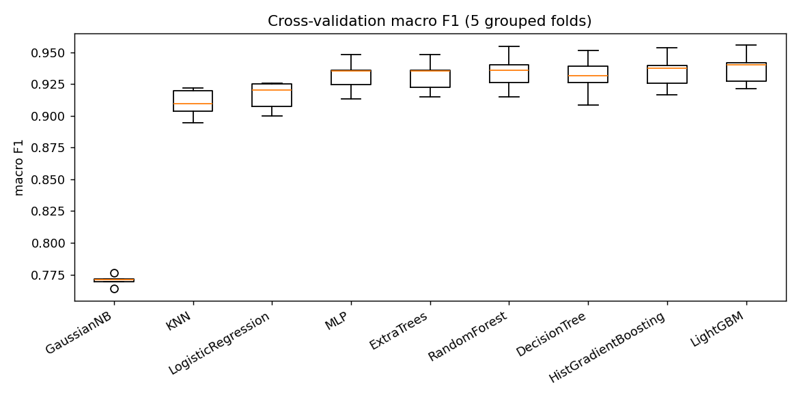
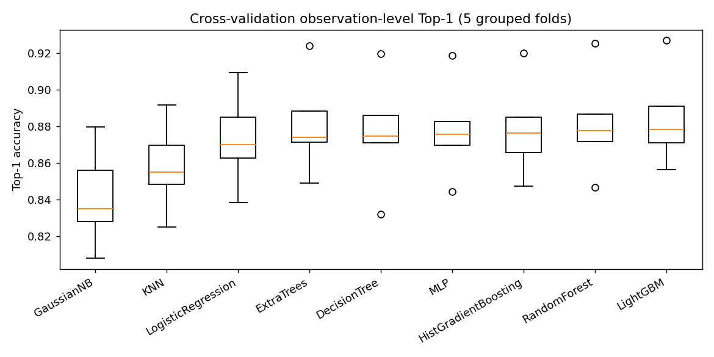
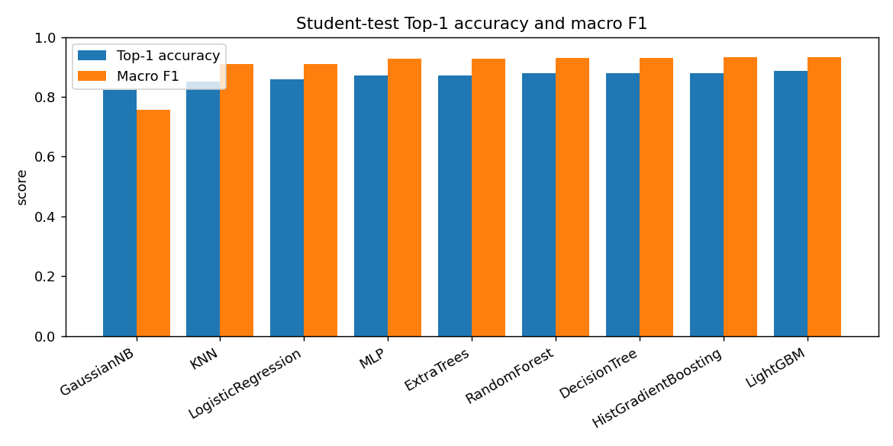
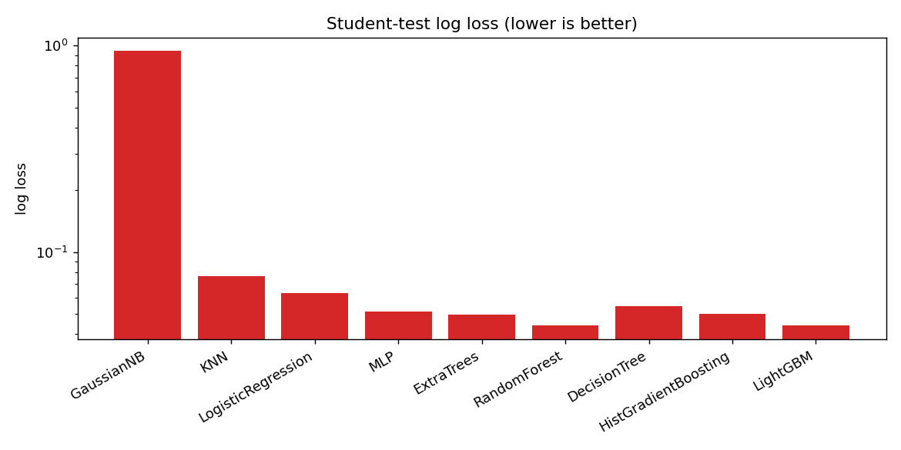
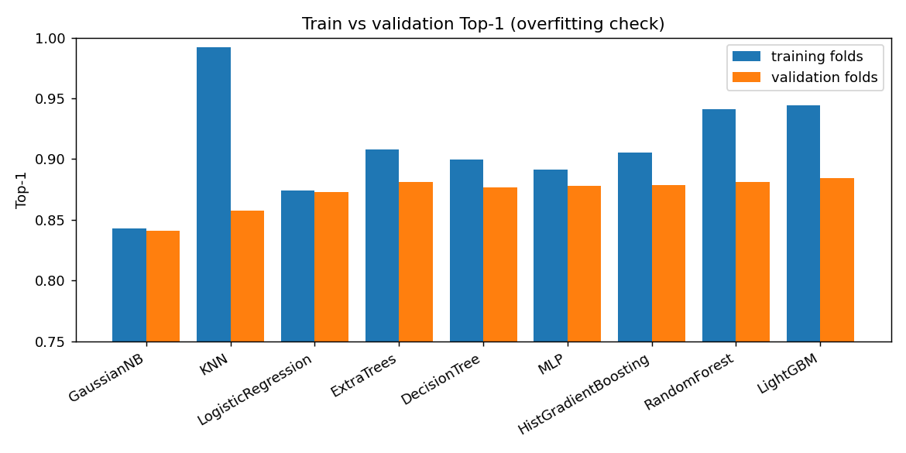
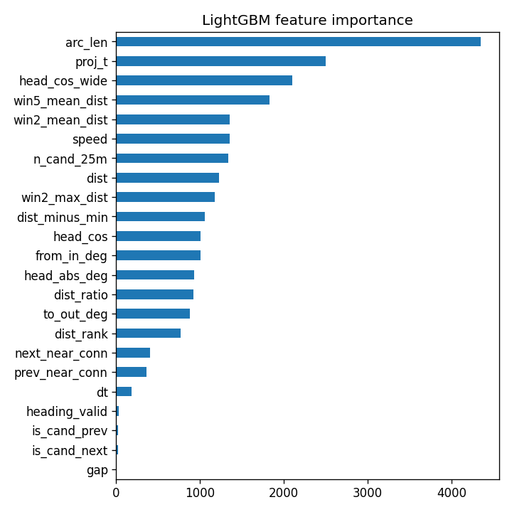
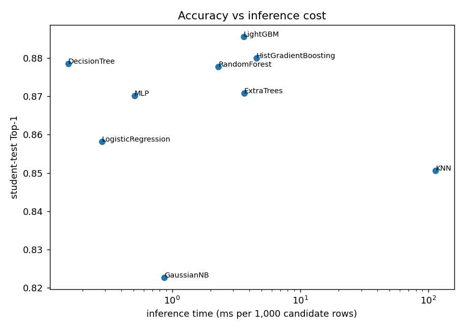
Training histories are plotted only for the two models that train iteratively and record a history: the MLP (loss per epoch) and LightGBM (log loss per boosting round). The other models have no epoch-wise history, so no curve is shown for them.
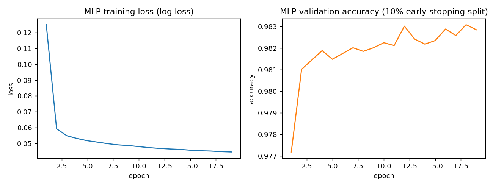
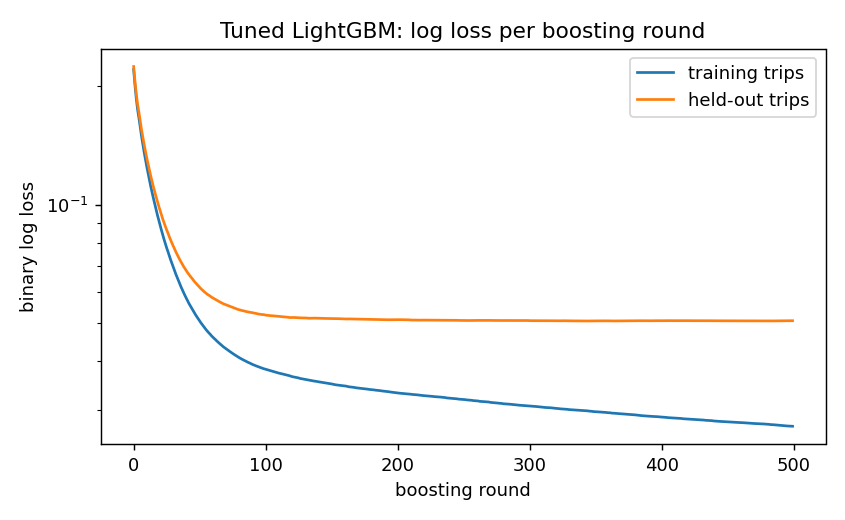
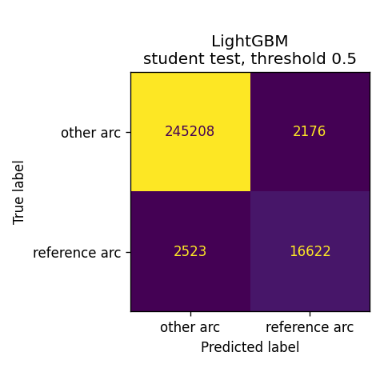
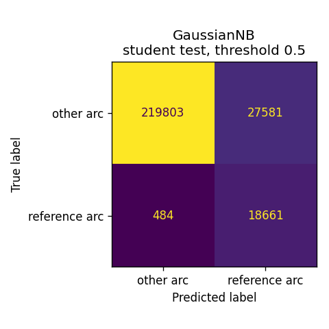
Confusion matrices for every model are in results/plots/cm_*.png.
Q1-Q2. Hyperparameters and ranges. We used Optuna's Tree-structured Parzen Estimator (TPE), seed 42, with 10 random start-up trials. Trial 0 was set to the untuned configuration so the search starts from a known reference.
| Hyperparameter | Range / distribution | Why | Best value |
|---|---|---|---|
| n_estimators | 100 to 800, step 50 | number of boosting rounds | 500 |
| learning_rate | 0.01 to 0.2, log-uniform | trades rounds against step size | 0.0423 |
| num_leaves | 15 to 255, log-uniform integer | tree complexity (main overfitting control) | 31 |
| min_child_samples | 10 to 300, log-uniform integer | minimum rows per leaf | 144 |
| subsample | 0.5 to 1.0 | row sampling per tree | 0.885 |
| colsample_bytree | 0.4 to 1.0 | feature sampling per tree | 0.608 |
| reg_lambda | 0.001 to 10, log-uniform | L2 penalty on leaf weights | 0.0041 |
| reg_alpha | 0.001 to 10, log-uniform | L1 penalty on leaf weights | 0.0010 |
Q3. Objective. Mean observation-level Top-1 accuracy over a 3-fold GroupKFold by trip on the 80 training trips (every
sixth GPS point, 438,558 rows, to fit the time budget). Neither the student-test nor the evaluator partition was used in the search.
Q4. Trials and cost. 40 trials, 10.7 minutes on a 16-thread laptop CPU. The objective ranged from 0.8810 to 0.8866 across trials; the untuned configuration (trial 0) scored 0.8852 and the best trial (number 34) scored 0.8866.
Q5. Best values. See the last column of the table above: fewer, smaller leaves (31 instead of 63), a much larger minimum leaf size (144 instead of 20) and stronger feature subsampling (0.61), that is, a more regularised model.
| Model | CV macro F1 | CV Top-1 | Student-test Top-1 | Student-test macro F1 | Log loss (test) | Inference (ms / 1k rows) | Fit time (s) |
|---|---|---|---|---|---|---|---|
| LightGBM untuned | 0.9372 | 0.8846 | 0.8856 | 0.9333 | 0.0441 | 3.62 | 8.0 |
| LightGBM tuned | 0.9374 | 0.8852 | 0.8843 | 0.9334 | 0.0439 | 5.92 | 12.6 |
Table 4.1: Untuned and tuned LightGBM with the same protocol as Section 3 (5 grouped folds on every third point, same student-test rows).
Q6. Did tuning help? Only marginally. CV Top-1 went from 0.8846 to 0.8852, CV macro F1 from 0.9372 to 0.9374, and student-test log loss from 0.0441 to 0.0439, while student-test Top-1 dropped slightly from 0.8856 to 0.8843. All of these differences are far smaller than the fold-to-fold standard deviation (about 0.027), so we read them as no real change in accuracy. The clearer effect is on overfitting: the train-validation Top-1 gap fell from 0.060 to 0.037. The flat objective surface (all 40 trials within 0.0056) suggests the remaining errors come from information the features do not contain (for example direction while stationary) rather than from model capacity. We kept the tuned model as the final model because it was selected on cross-validation alone and generalises with a smaller gap. After HMM decoding the two reach the same student-test Top-1 (0.9251 untuned, 0.9257 tuned). Inference is slower (about 6 ms against 4 ms per 1,000 rows) because there are more trees.
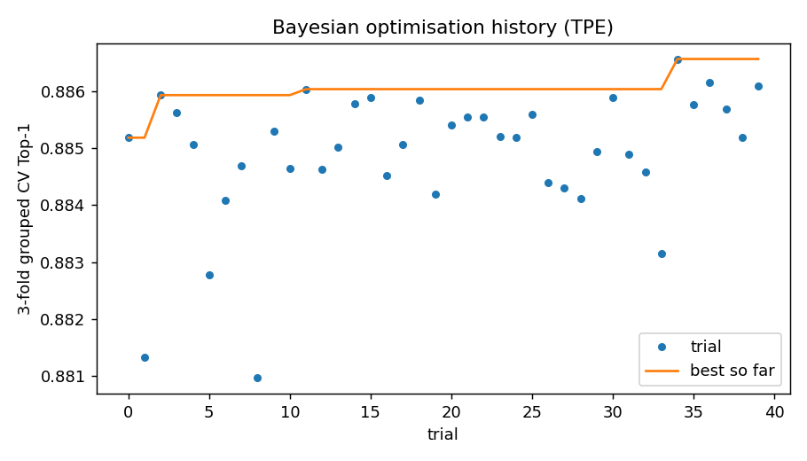
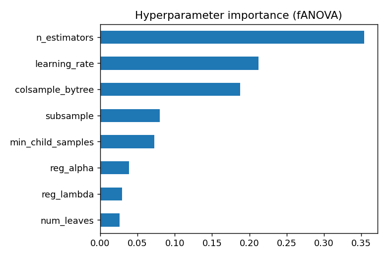
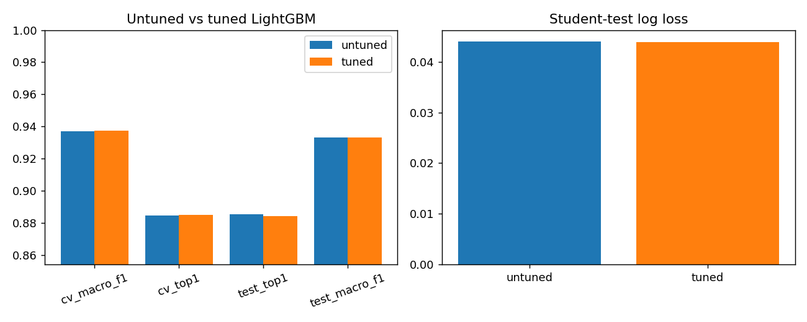
Q1. Hidden states. At GPS point i the hidden state is one of that point's candidate arcs (up to 16 directed arcs). The candidate slot keeps the link to the arc id, so the decoded path is directly a sequence of road segments.
Q2. Emission probabilities. The tuned LightGBM probability of each candidate, floored at 1e-4 and renormalised over the point's candidates, raised to an emission weight w: log e(i, a) = w · log p̂(a | point i).
Q3. Transition probabilities. For candidate a at point i and b at point i+1 we compute the driving distance droute from the projection on a to the projection on b: the rest of arc a, plus the shortest road-graph path from the end node of a to the start node of b (Dijkstra, directed), plus the part of b up to the projection. On the same arc it is the signed distance along the arc, so moving backwards is penalised. With dgps the straight-line distance between the two fixes:
log P(b | a) = −| droute − dgps | / (β · √Δt)
A real vehicle's driving distance between two fixes is close to their straight-line distance; a jump onto a parallel street or a reversed arc needs a much longer path and is penalised. Dijkstra searches only up to 2·dgps + 300 m from each source node.
Viterbi recurrence. δi+1(b) = maxa [ δi(a) + log P(b | a) ] + log e(i+1, b), with back-pointers, computed in log space and renormalised at each step. The final state is the arg max of δ at the last point, followed back through the pointers.
Q4. Missing candidates and large gaps. Points always have at least one candidate because the nearest arcs are taken without a radius limit; missing slots get probability zero. For time gaps the √Δt factor widens the transition distribution. A 60 s gap allows about eight times the distance mismatch of a 1 s step, and the Dijkstra radius grows with the distance travelled.
Q5. Disconnected segments. If no path exists between any pair of candidates within the search radius, every transition is −∞. The decoder then records a break, stores the best state before the break and restarts from the emissions at the next point, so one bad step cannot destroy the whole trip. On the 10 student-test trips this happened once (trip 00000056). When the route is reconstructed, consecutive distinct arcs are joined with the shortest path between them.
Decoder tuning. β ∈ {5, 10, 20, 40, 80} m and w ∈ {0.5, 1, 2} were grid-searched on 15 training trips held out from a LightGBM model fitted on the remaining training trips (results/hmm_tuning_grid.csv). Only the product β·w matters: multiplying all log scores by a constant does not change the arg max, so β = 5, w = 1 and β = 10, w = 0.5 give identical results. The best setting was β = 5 m, w = 1.0 (Top-1 0.9257 against 0.8909 for the classifier alone on those trips). Once β·w goes above 5, accuracy drops steadily: the decoder then trusts the classifier more and the road network less. Every setting in the grid still beats the classifier alone.
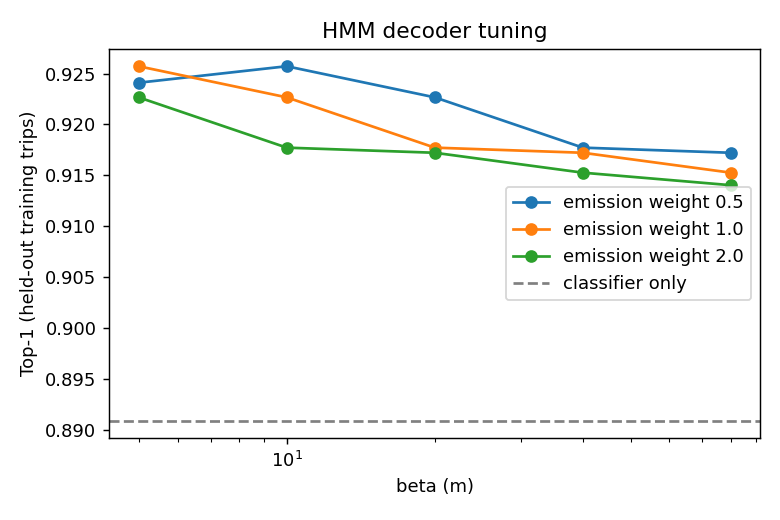
| Trip | Points | Top-1 classifier | Top-1 HMM | Continuity classifier | Continuity HMM | Route F1 classifier | Route F1 HMM | Breaks | Decode (s) |
|---|---|---|---|---|---|---|---|---|---|
| 00000000 | 2503 | 0.9477 | 0.9660 | 0.9824 | 0.9964 | 0.9513 | 0.9953 | 0 | 0.86 |
| 00000007 | 1354 | 0.9631 | 0.9970 | 0.9985 | 1.0000 | 0.9843 | 0.9965 | 0 | 0.21 |
| 00000009 | 1049 | 0.8589 | 0.8951 | 0.9189 | 0.9494 | 0.8930 | 0.9751 | 0 | 0.33 |
| 00000040 | 2995 | 0.9469 | 0.9649 | 0.9749 | 0.9957 | 0.8978 | 0.9979 | 0 | 1.96 |
| 00000052 | 262 | 0.9351 | 0.9542 | 0.9425 | 0.9617 | 0.7917 | 0.9984 | 0 | 0.04 |
| 00000056 | 3958 | 0.8926 | 0.9348 | 0.9310 | 0.9644 | 0.8614 | 0.9789 | 1 | 3.58 |
| 00000065 | 768 | 0.8477 | 0.8724 | 0.9570 | 0.9844 | 0.8079 | 0.9863 | 0 | 0.21 |
| 00000076 | 1486 | 0.9044 | 0.9462 | 0.9293 | 0.9724 | 0.7496 | 0.9882 | 0 | 3.03 |
| 00000077 | 3911 | 0.7612 | 0.8453 | 0.9540 | 0.9923 | 0.8335 | 0.9838 | 0 | 0.79 |
| 00000091 | 874 | 0.8924 | 0.9245 | 0.9198 | 0.9714 | 0.7819 | 0.9924 | 0 | 0.18 |
Table 5.1: Classifier-only against classifier + HMM per student-test trip (results/hmm_student_test_per_trip.csv). Route F1 is length-weighted overlap between the reconstructed arc set and the reference arc set.
Yes. Weighted by points, Top-1 rises from 88.4% to 92.6%, continuity from 95.4% to 98.3%, and mean route F1 from 85.5% to 98.9%. The largest change is route precision. Classifier-only predictions scatter onto short side arcs and reversed arcs, and after gap filling these add wrong road length (mean route precision 0.756); the HMM removes most of them (0.981). Point accuracy improved on every trip, by at least 1.8 percentage points. The biggest gain is trip 00000077, from 0.7612 to 0.8453, which has long stationary periods where the classifier cannot tell the direction (Figure 6.2). The decoder also improves every one of the nine classifiers (Table 3.1, last column). The weakest model gains the most (Gaussian Naive Bayes, from 0.8227 to 0.8912), so the road-network constraint makes up for part of a weak classifier.
Where the HMM did not help. After decoding, 1,423 of 19,160 student-test points are still wrong (results/hmm_error_analysis.csv, scripts/08_error_analysis.py):
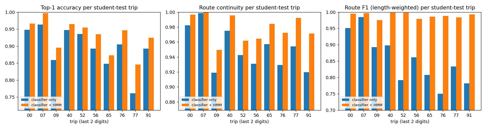
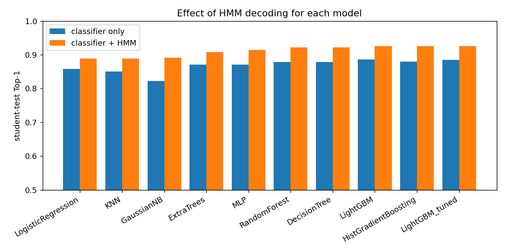
pathsnap/maps.py builds every map: OpenStreetMap tiles, raw GPS observations (blue dots), the road network within 120 m of
the track (grey), the reference route (green, wide and semi-transparent so the prediction stays visible on top), classifier-only arcs that
are not on the reference (orange), the HMM-decoded and gap-filled predicted route (red), start and end markers, a legend and a layer
control. Each map fits its bounds to the track. Interactive HTML versions are in results/maps/: one per student-test trip
(student_test_*.html), EDA maps (eda_trip_*.html) and zoomed detail maps (detail_*.html, from
scripts/07_detail_maps.py, which picks the 120-point window where the HMM corrects the most classifier errors).
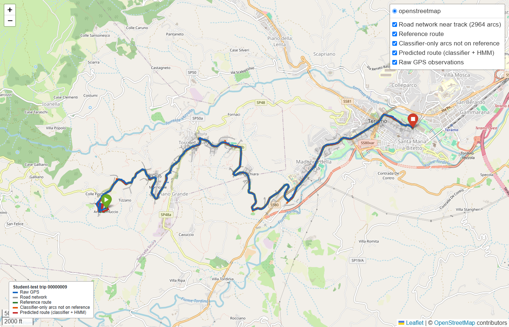
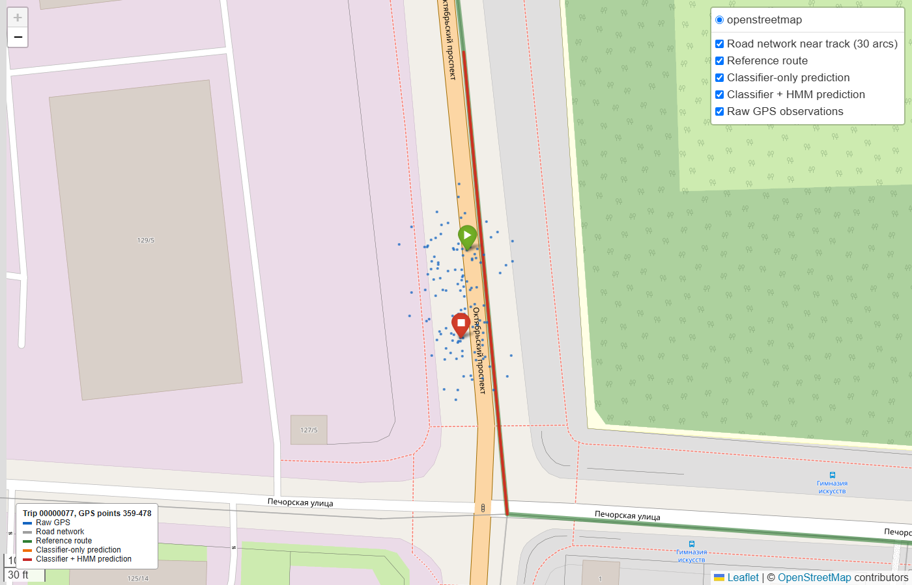
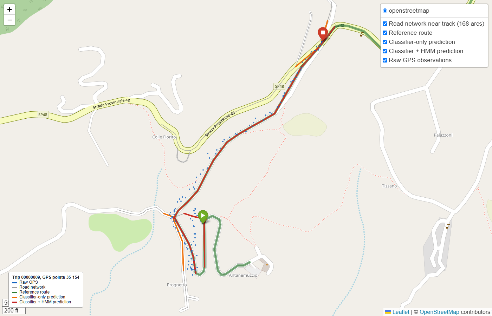
Laptop 1 runs uvicorn api.main:app --host 0.0.0.0 --port 8000. At start-up it loads the tuned LightGBM model, the
HMM configuration and the folder of evaluation trips (environment variable PATHSNAP_EVAL_DIR). Endpoints:
GET /health, GET /trips (the trip ids in that folder) and POST /predict with body
{"trip_id": "..."}. A prediction reads only the .track, .nodes and .arcs files and runs
cleaning, projection, candidate generation, features, LightGBM, Viterbi and gap filling. Afterwards a separate function reads
.route, aligns it to the track and computes point accuracy (HMM and classifier-only), route precision, recall and F1. The
response contains the GPS points, the predicted route as polylines, the predicted arc id for every GPS point, continuity, the evaluation
numbers and timings. The reference route itself is never sent to the client. Every request is logged in the console with the trip id,
the number of points and candidates, the time of each stage and the accuracy.
Laptop 2 runs python ui/serve.py (Python standard library only) and serves a single page built with Leaflet. The evaluator
enters Laptop 1's address, loads the trip list, and clicks a trip. The page sends only the trip id and draws the returned GPS points and
predicted route with a layer control and legend, plus a results table.
A request takes from 0.2 s (trip 00000052, 262 points) to 7.7 s (trip 00000056, 3,958 points) on the student-test trips. For the longest trip, features take 0.3 s, classifier plus Viterbi 3.8 s (mostly the Dijkstra searches) and server-side scoring 3.5 s (mostly the label alignment, which is only needed for evaluation).
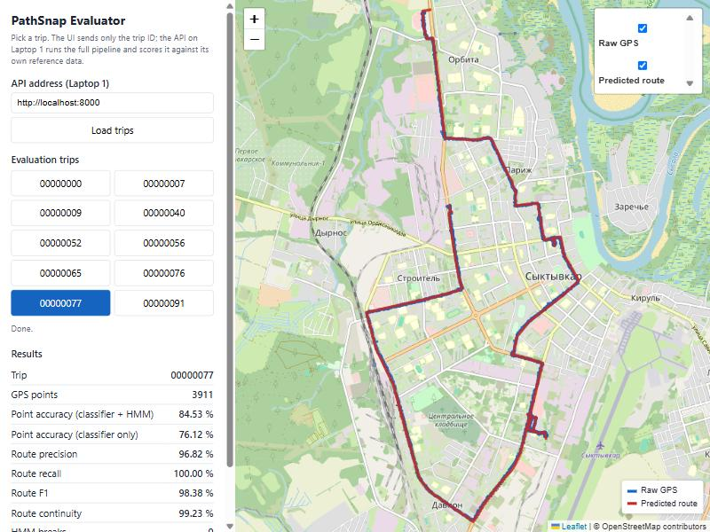
2026-11-18 11:13:02,844 | INFO | Loaded model LightGBM LGBMClassifier, HMM beta=5.0 emission_weight=1.00, evaluation folder C:\Users\annam\Documents\PESU\SEM 5\ML\Hackathon\Student folder\student_test INFO: Started server process [16820] INFO: Waiting for application startup. INFO: Application startup complete. INFO: Uvicorn running on http://0.0.0.0:8000 (Press CTRL+C to quit) 2026-11-18 11:13:07,507 | INFO | GET /trips -> 10 trips INFO: 127.0.0.1:50060 - "GET /trips HTTP/1.1" 200 OK INFO: 127.0.0.1:50060 - "OPTIONS /predict HTTP/1.1" 200 OK 2026-11-18 11:13:11,963 | INFO | POST /predict trip=00000077: request received 2026-11-18 11:13:15,748 | INFO | trip=00000077 points=3911 candidates=61799 | features 0.32s, classifier+HMM 1.16s, scoring 2.30s | HMM accuracy=0.8453 classifier-only=0.7612 route F1=0.9838 breaks=0 INFO: 127.0.0.1:50060 - "POST /predict HTTP/1.1" 200 OK
Listing 7.1: API console log for the request in Figure 7.1.
These numbers were computed once, through the API, after every modelling choice was frozen: model, features,
hyperparameters and decoder settings are the ones described above, and the code on GitHub was committed before the
evaluator data was received. No result in this section was used to select or tune anything. scripts/09_evaluator_results.py
calls the same /trips and /predict endpoints as the evaluator UI and writes
results/evaluator_test_results.csv.
| Trip | Points | Top-1 classifier | Top-1 HMM | Continuity HMM | Route precision | Route recall | Route F1 | Breaks |
|---|---|---|---|---|---|---|---|---|
| 00000015 | 6854 | 0.8287 | 0.9190 | 0.9978 | 0.8563 | 0.9911 | 0.9188 | 0 |
| 00000017 | 1346 | 0.8834 | 0.9042 | 0.8892 | 0.9892 | 1.0000 | 0.9946 | 0 |
| 00000023 | 458 | 0.9345 | 0.9607 | 0.9912 | 0.9950 | 1.0000 | 0.9975 | 0 |
| 00000030 | 654 | 0.7844 | 0.8318 | 0.9142 | 0.9623 | 0.9895 | 0.9757 | 0 |
| 00000049 | 2642 | 0.9902 | 0.9921 | 0.9947 | 1.0000 | 0.9988 | 0.9994 | 0 |
| 00000059 | 1031 | 0.9176 | 0.9302 | 0.9350 | 0.9952 | 1.0000 | 0.9976 | 0 |
| 00000067 | 916 | 0.9629 | 0.9640 | 0.9913 | 0.9628 | 0.9949 | 0.9786 | 0 |
| 00000073 | 1144 | 0.9738 | 0.9781 | 0.9921 | 0.9966 | 1.0000 | 0.9983 | 0 |
| 00000087 | 1399 | 0.9442 | 0.9814 | 0.9878 | 1.0000 | 0.9954 | 0.9977 | 0 |
| 00000094 | 3230 | 0.9285 | 0.9390 | 0.9796 | 0.9835 | 1.0000 | 0.9917 | 0 |
Table 8.1: Evaluator-test trips (results/evaluator_test_results.csv).
| Student test (10 trips) | Evaluator test (10 trips) | |
|---|---|---|
| Top-1, classifier only | 88.4% | 89.9% |
| Top-1, classifier + HMM | 92.6% | 94.0% |
| Route continuity | 98.3% | 97.9% |
| Route F1 (mean over trips) | 98.9% | 98.5% |
Table 8.2: Student test against evaluator test (point-weighted Top-1 and continuity).
The evaluator results are in line with the student-test results: point accuracy 94.0% against 92.6%, route F1 98.5% against 98.9%. The HMM improved every evaluator trip, by 0.1 to 9.0 percentage points, and there were no decoder breaks. The weakest trips are 00000030 (Top-1 0.8318) and 00000015, whose route recall is 0.9911 but route precision only 0.8563: the reconstructed route covers the reference almost completely but includes some extra road. We did not analyse these trips further, because doing so would amount to developing on the evaluator data.